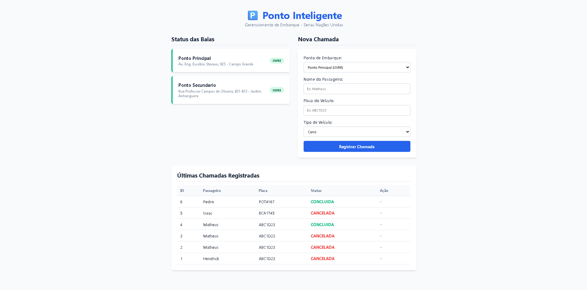
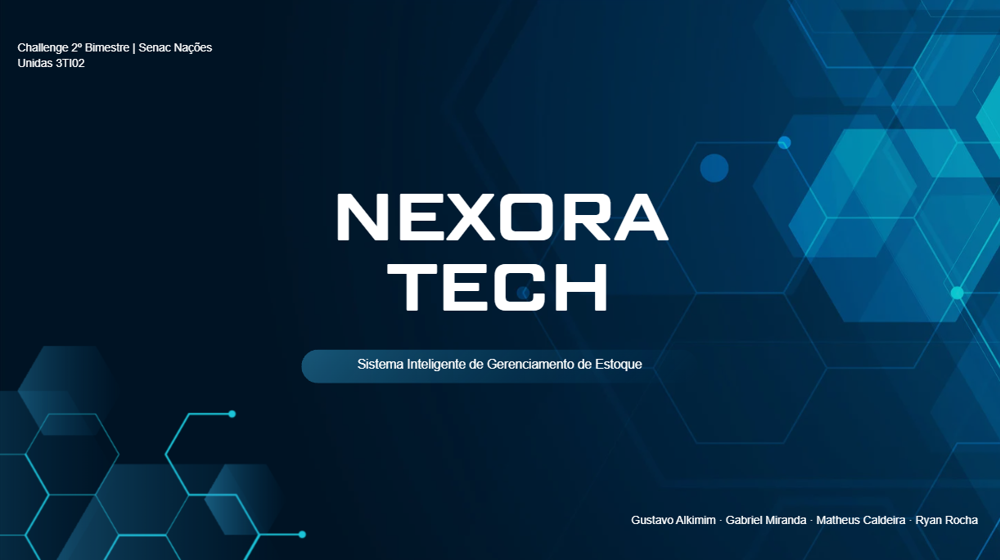
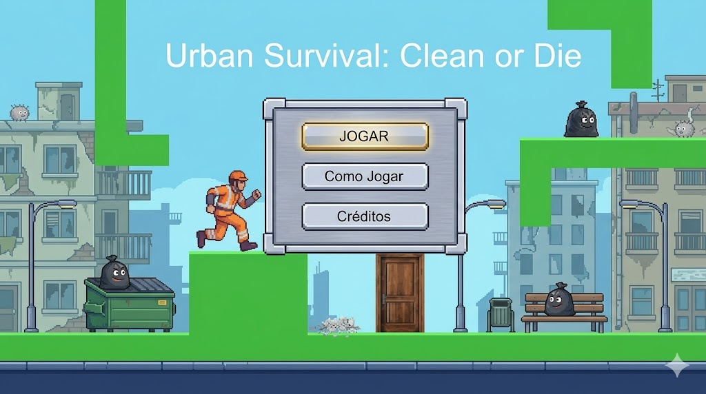

Desenvolvedor Frontend/Backend & Entusiasta de Tecnologia
Sou um profissional proativo e comunicativo, apaixonado por resolver problemas através da tecnologia. Tenho facilidade em trabalhar em equipe e busco constantemente evoluir minhas habilidades técnicas, unindo minha experiência com infraestrutura de redes, banco de dados e desenvolvimento de software para criar soluções eficientes.
Como as Ciências Humanas contribuíram para minha lógica de programação
As Ciências Humanas foram essenciais para a minha capacidade de comunicação e empatia. O estudo da Filosofia e da Sociologia me ajudou a entender como a tecnologia impacta a sociedade e como as pessoas interagem com os sistemas. Essa base me torna um profissional mais comunicativo, capaz de entender as necessidades do usuário e trabalhar em equipe de forma colaborativa e ética.
Como as Ciências da Natureza contribuíram para minha lógica de programação
A Física e a Biologia me ensinaram a aplicar o método científico na programação. A observação, a formulação de hipóteses e a resolução de problemas são a base do raciocínio lógico. Minha familiaridade com a área de Redes de computadores também vem desse entendimento de como os sistemas e as ondas (como o Wi-Fi) funcionam fisicamente.
Como a Matemática contribuiu para minha lógica de programação
A Matemática é a espinha dorsal da programação. A lógica booleana, os algoritmos e a estruturação de dados foram fundamentais para eu aprender a programar em Python e Java. Além disso, o raciocínio matemático me ajuda diariamente na criação de consultas complexas em SQL e na otimização do meu código.
Como as Linguagens contribuíram para minha lógica de programação
A interpretação de texto e a comunicação são vitais na tecnologia. Escrever um código limpo, criar uma documentação ou até mesmo um site em HTML exige clareza na linguagem. Além disso, meu inglês intermediário, desenvolvido na área de Linguagens, me permite ler documentações oficiais e consumir conteúdos técnicos globais.
Tendências Tecnológicas
A Cibersegurança é o pilar de proteção do mundo digital. Com meus conhecimentos em Redes, entendo a importância de proteger a infraestrutura contra ataques e vazamentos. Conceitos como criptografia, firewalls e a conformidade com a LGPD são essenciais para garantir que os dados dos usuários e das empresas permaneçam seguros e íntegros.
Tendências Tecnológicas
O Blockchain é uma tecnologia de registro distribuído que garante a imutabilidade das informações sem a necessidade de uma autoridade central. Vai muito além das criptomoedas: os *smart contracts* (contratos inteligentes) e a transparência das transações podem revolucionar setores como logística, saúde e sistemas de votação.
Tendências Tecnológicas
A automação visa reduzir a intervenção humana em tarefas repetitivas. Utilizando minha base em Python, já consigo criar scripts para automatizar processos. Com a Robótica e a Indústria 4.0, a tendência é que a automação se integre com a Inteligência Artificial, criando sistemas autônomos e otimizando a produtividade.
Tendências Tecnológicas
O Edge Computing (Computação de Borda) muda a forma como processamos dados. Em vez de enviar tudo para a nuvem, o processamento ocorre próximo à fonte geradora (como sensores de IoT). Isso reduz a latência, economiza largura de banda e é crucial para tecnologias que exigem respostas em tempo real, como carros autônomos e cidades inteligentes.
Trabalhos de TI desenvolvidos ao longo do curso

Sistema Fullstack para gestão de pontos de embarque. Desenvolvido com Java, Spring Boot e MySQL, o projeto conta com autenticação segura (BCrypt), controle de vagas em tempo real e um sistema inteligente que libera vagas automaticamente após 5 minutos de inatividade, otimizando a organização e o fluxo de veículos.
Ver repositório
Desenvolvimento de um sistema Full Stack web para a empresa Difer, com o objetivo de modernizar e automatizar o controle de estoque de aços e metais. A aplicação resolve problemas de processos manuais, oferecendo uma interface intuitiva para cadastro, consulta, atualização e exclusão de produtos, além da geração de relatórios em tempo real. O projeto utilizou Java e Spring Boot no backend para criação de APIs REST, Spring Data JPA para persistência, banco de dados H2 e GitHub para versionamento.
Ver repositório
Jogo 2D focado em sobrevivência e consciência ambiental, alinhado à ODS 11 (Cidades Sustentáveis). O jogador controla um herói que precisa coletar resíduos e desviar de perigos urbanos, como água poluída e vidros, para sobreviver com suas 3 vidas. O desenvolvimento utilizou a engine Construct 3, com criação de fluxogramas, pseudocódigos e gestão de projeto via Kanban.
Ver repositórioVamos conversar sobre ideias, projetos ou oportunidades